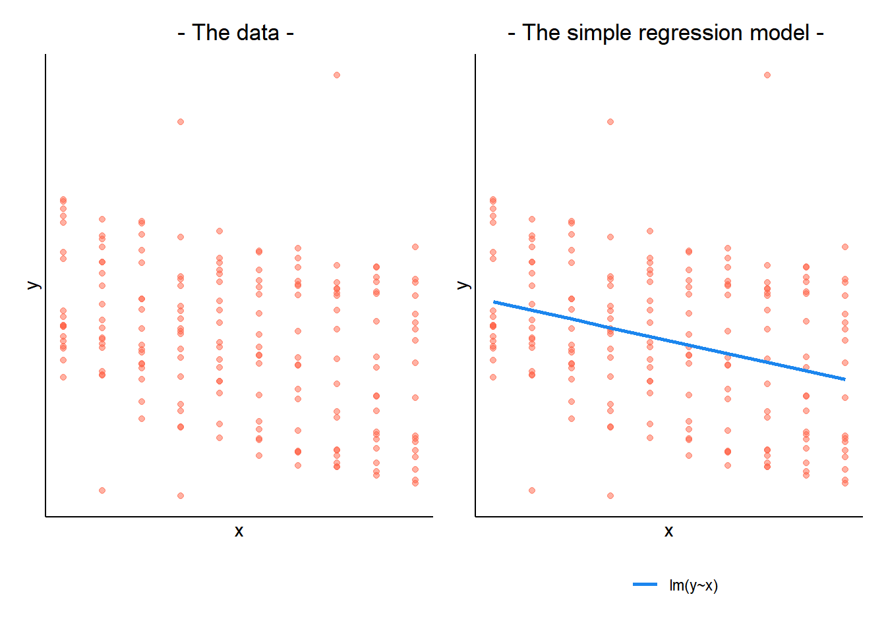
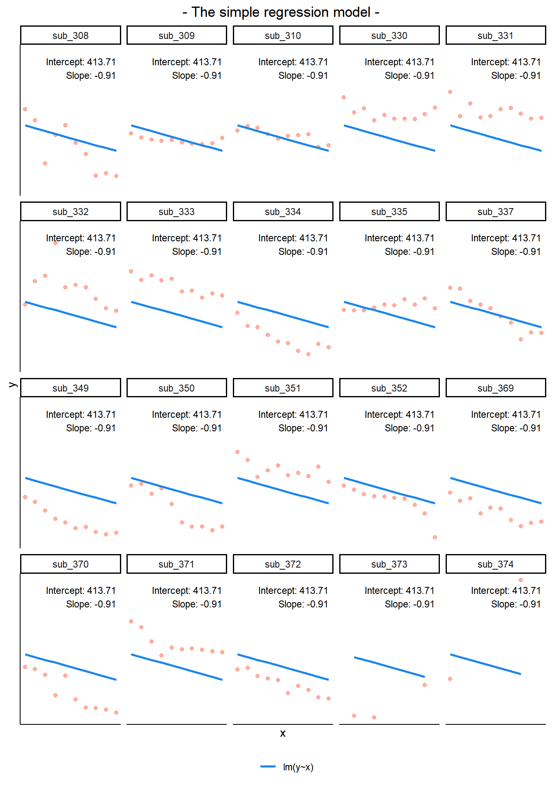
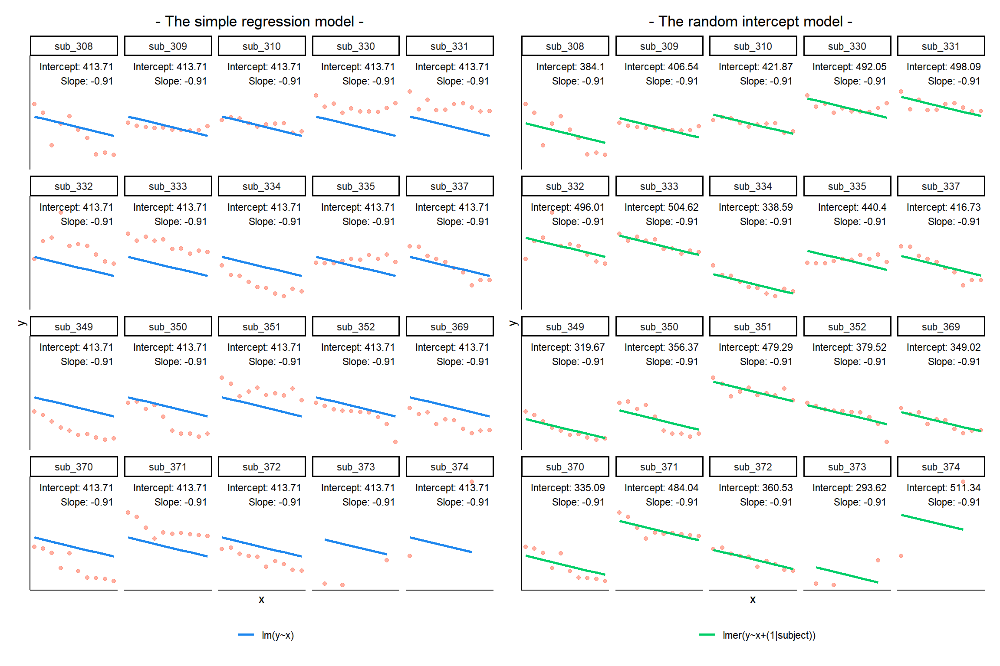
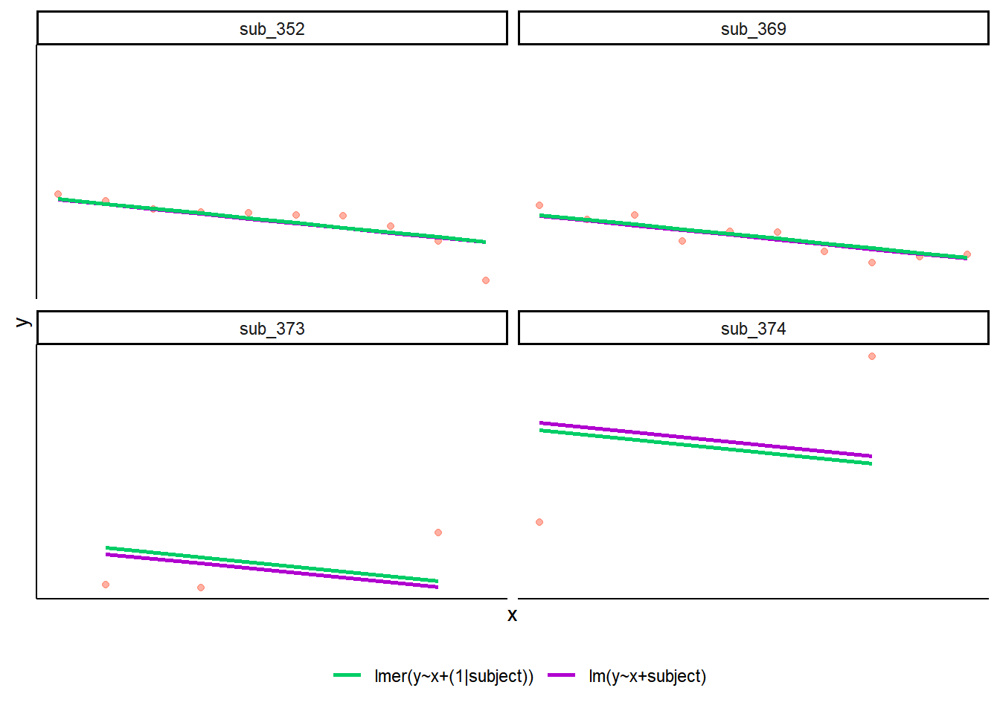
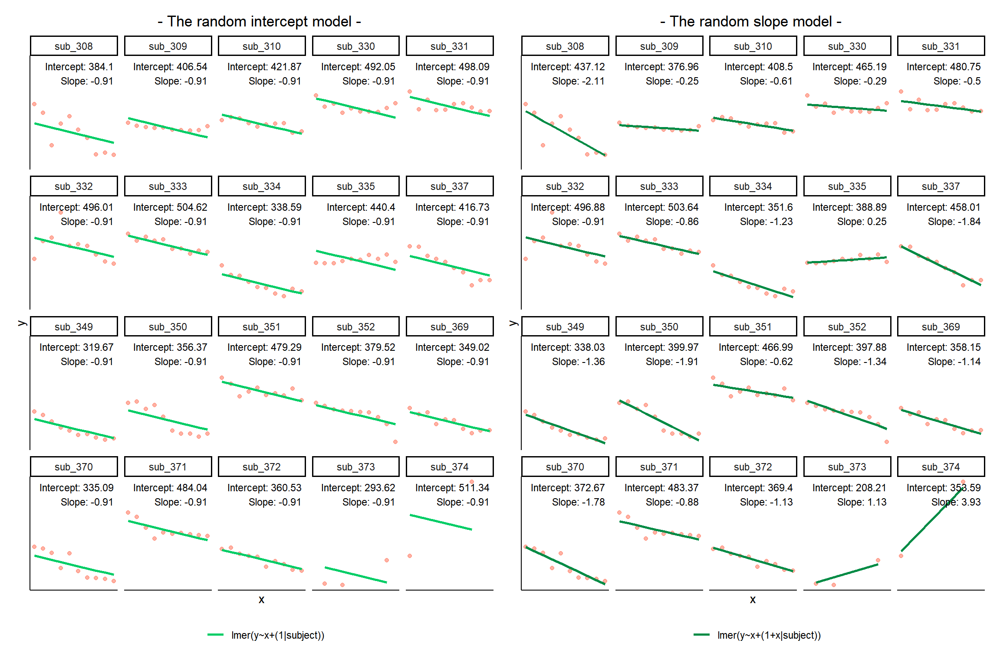
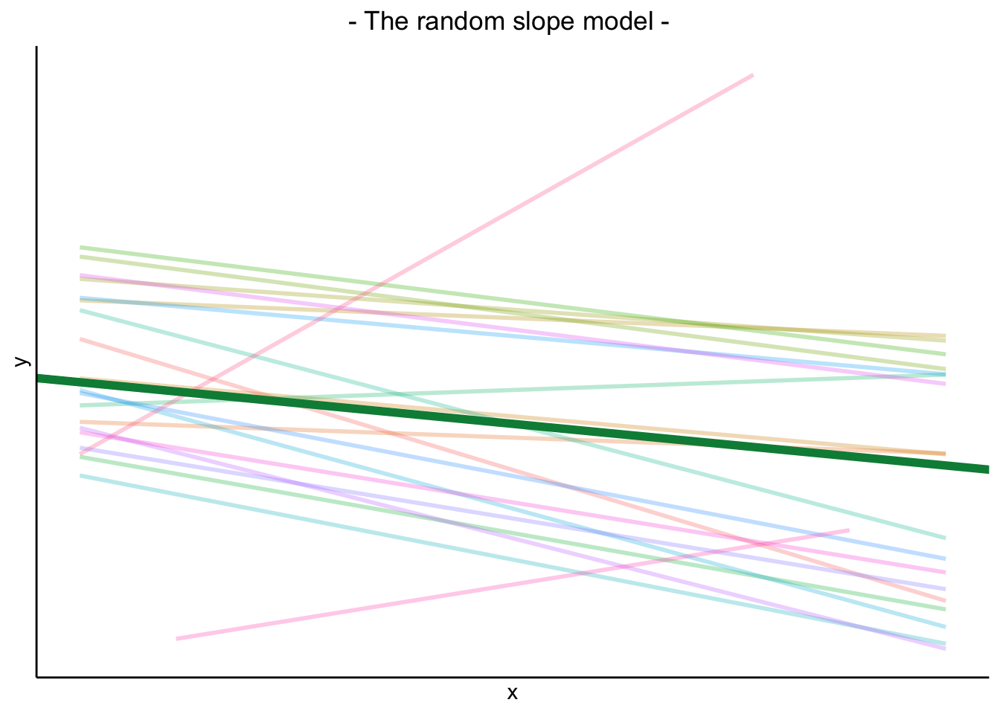
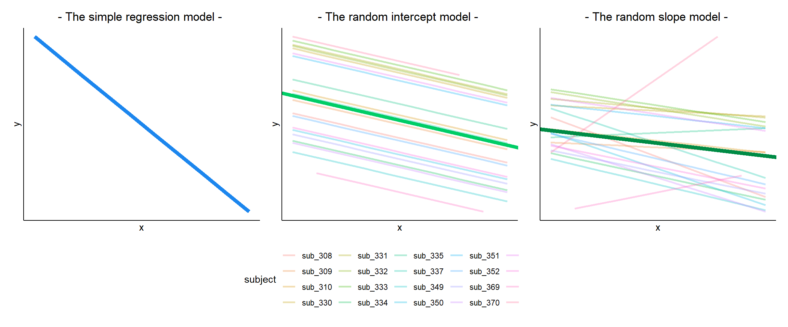
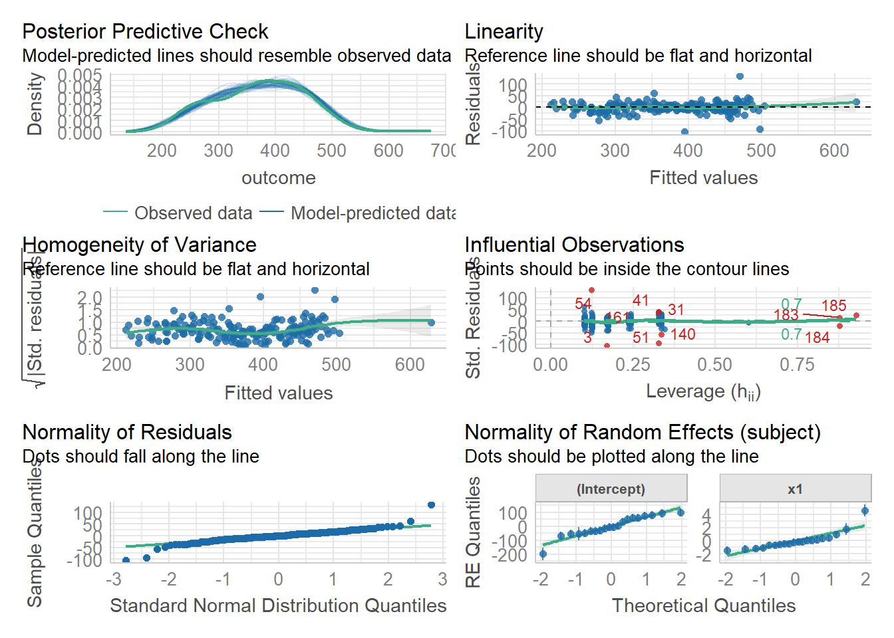
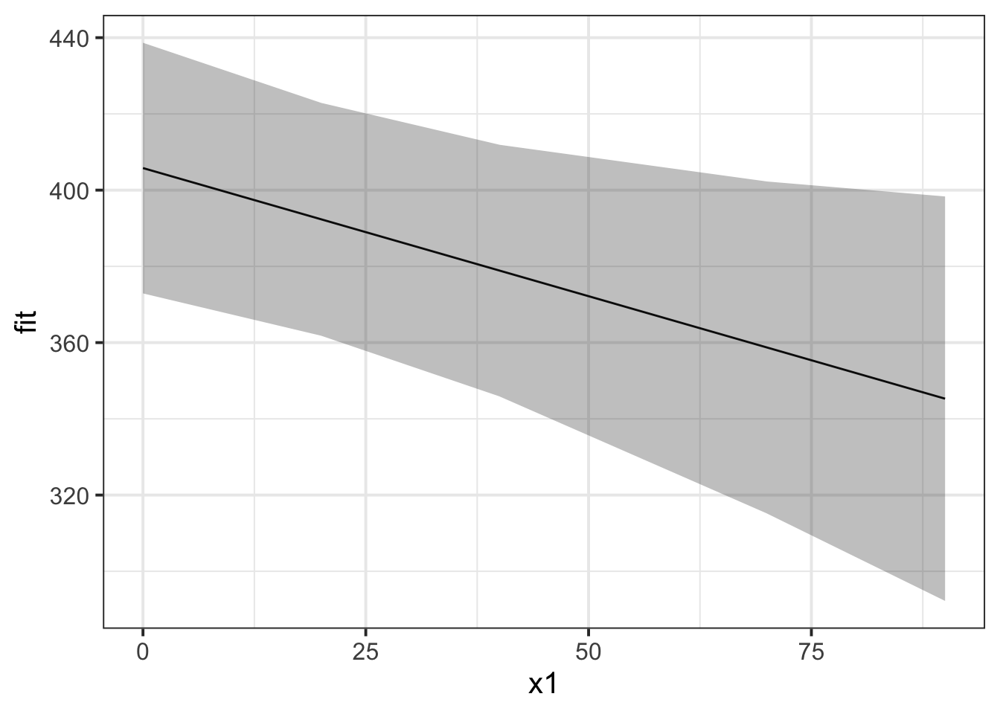
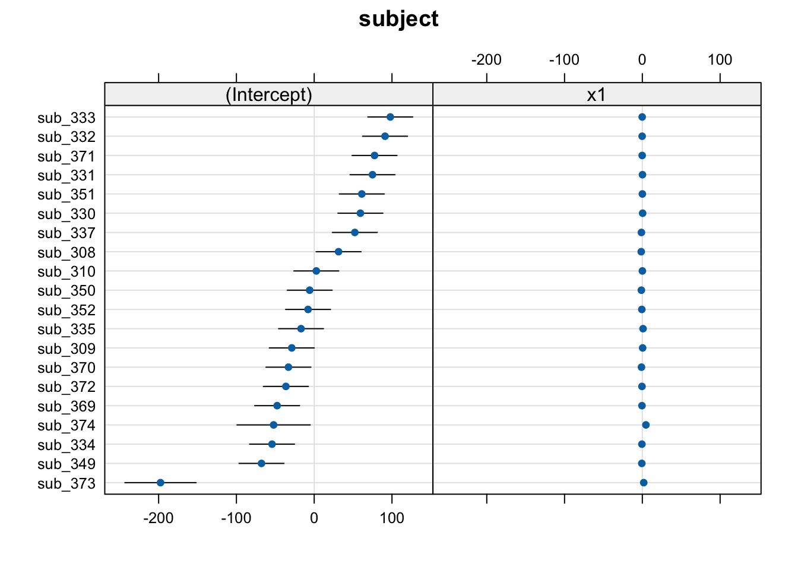

5. Recap & Practice Datasets
Flashcards: lm to lmer
In a simple linear regression, there is only considered to be one source of random variability: any variability left unexplained by a set of predictors (which are modelled as fixed estimates) is captured in the model residuals.
Multi-level (or ‘mixed-effects’) approaches involve modelling more than one source of random variability - as well as variance resulting from taking a random sample of observations, we can identify random variability across different groups of observations. For example, if we are studying a patient population in a hospital, we would expect there to be variability across the our sample of patients, but also across the doctors who treat them.
We can account for this variability by allowing the outcome to be lower/higher for each group (a random intercept) and by allowing the estimated effect of a predictor vary across groups (random slopes).
Before you expand each of the boxes below, think about how comfortable you feel with each concept.
This content is very cumulative, which means often going back to try to isolate the place which we need to focus efforts in learning.
Simple Linear Regression
Formula:
- \(y_i = \beta_0 + \beta_1 x_i + \epsilon_i\)
R command:
lm(outcome ~ predictor, data = dataframe)
Note: this is the same as lm(outcome ~ 1 + predictor, data = dataframe). The 1 + is always there unless we specify otherwise (e.g., by using 0 +).
Clustered (multi-level) data
When our data is clustered (or ‘grouped’) such that datapoints are no longer independent, but belong to some grouping such as that of multiple observations from the same subject, we have multiple sources of random variability. A simple regression does not capture this.
If we separate out our data to show an individual plot for each grouping (in this data the grouping is by subjects), we can see how the fitted regression line from lm() is assumed to be the same for each group.

Random intercepts
By including a random-intercept term, we are letting our model estimate random variability around an average parameter (represented by the fixed effects) for the clusters.
Formula:
Level 1:
- \(y_{ij} = \beta_{0i} + \beta_{1i} x_{ij} + \epsilon_{ij}\)
Level 2:
- \(\beta_{0i} = \gamma_{00} + \zeta_{0i}\)
Where the expected values of \(\zeta_{0}\), and \(\epsilon\) are 0, and their variances are \(\sigma_{0}^2\) and \(\sigma_\epsilon^2\) respectively. We will further assume that these are normally distributed.
We can now see that the intercept estimate \(\beta_{0i}\) for a particular group \(i\) is represented by the combination of a mean estimate for the parameter (\(\gamma_{00}\)) and a random effect for that group (\(\zeta_{0i}\)).
R command:
lmer(outcome ~ predictor + (1 | grouping), data = dataframe)
Notice how the fitted line of the random intercept model has an adjustment for each subject.
Each subject’s line has been moved up or down accordingly.

Shrinkage
If you think about it, we might have done a similar thing to the random intercept with the tools we already had at our disposal, by using lm(y~x+subject). This would give us a coefficient for the difference between each subject and the reference level intercept, or we could extend this to lm(y~x*subject) to give us an adjustment to the slope for each subject.
However, the estimate of these models will be slightly different:

Why? One of the benefits of multi-level models is that our cluster-level estimates are shrunk towards the average depending on a) the level of across-cluster variation and b) the number of datapoints in clusters.
Random slopes
Formula:
Level 1:
- \(y_{ij} = \beta_{0i} + \beta_{1i} x_{ij} + \epsilon_{ij}\)
Level 2:
- \(\beta_{0i} = \gamma_{00} + \zeta_{0i}\)
- \(\beta_{1i} = \gamma_{10} + \zeta_{1i}\)
Where the expected values of \(\zeta_0\), \(\zeta_1\), and \(\epsilon\) are 0, and their variances are \(\sigma_{0}^2\), \(\sigma_{1}^2\), \(\sigma_\epsilon^2\) respectively. We will further assume that these are normally distributed.
As with the intercept \(\beta_{0i}\), the slope of the predictor \(\beta_{1i}\) is now modelled by a mean \(\gamma_{10}\) and a random effect for each group (\(\zeta_{1i}\)).
R command:
lmer(outcome ~ predictor + (1 + predictor | grouping), data = dataframe)
Note: this is the same as lmer(outcome ~ predictor + (predictor | grouping), data = dataframe) . Like in the fixed-effects part, the 1 + is assumed in the random-effects part.

Model parameters: Fixed effects
The plot below show the fitted values for each subject from the random slopes model lmer(outcome ~ predictor + (1 + predictor | grouping), data = dataframe)

The thick green line shows the fixed intercept and slope around which the groups all vary randomly.
The fixed effects are the parameters that define the thick green line, and we can extract them using the fixef() function:
These are the overall intercept and slope. Think of these as the estimated intercept and slope for the average group.
fixef(random_slopes_model)(Intercept) x1
405.7897675 -0.6722654
Model parameters: Variance components
As well as estimating the fixed effects, multilevel models are also defined by the “variance components”. These are the variances and covariances of the random effects.
i.e. how much do groups vary in around the fixed intercept? and around the fixed slope? Do groups with higher intercepts also have higher slopes (this is the correlation).

We can extract these using the VarCorr() function, and we can also see them in the “random effects” part of the summary() output from a model.
VarCorr(random_slopes_model) Groups Name Std.Dev. Corr
subject (Intercept) 72.7164
x1 1.3642 -0.347
Residual 25.7358 Remember, variance is just standard deviation squared!
Group-specific random effects
The plots below show the fitted values for each subject from each model that we have gone through in these expandable boxes (simple linear regression, random intercept, and random intercept & slope):

In the random-intercept model (center panel), the differences from each of the subjects’ intercepts to the fixed intercept (thick green line) have mean 0 and standard deviation \(\sigma_0\). The standard deviation (and variance, which is \(\sigma_0^2\)) is what we see in the random effects part of our model summary (or using the VarCorr() function).

In the random-slope model (right panel), the same is true for the differences from each subjects’ slope to the fixed slope. We can extract the deviations for each group from the fixed effect estimates using the ranef() function.
These are the deviations from the overall intercept (\(\widehat \gamma_{00} = 405.79\)) and slope (\(\widehat \gamma_{10} = -0.672\)) for each subject \(i\).
ranef(random_slopes_model)$subject
(Intercept) x1
sub_308 31.327291 -1.43995253
sub_309 -28.832219 0.41839420
sub_310 2.711822 0.05993766
sub_330 59.398971 0.38526670
sub_331 74.958481 0.17391602
sub_332 91.086535 -0.23461836
sub_333 97.852988 -0.19057838
sub_334 -54.185688 -0.55846794
sub_335 -16.902018 0.92071637
sub_337 52.217859 -1.16602280
sub_349 -67.760246 -0.68438960
sub_350 -5.821271 -1.23788002
sub_351 61.198823 0.05499816
sub_352 -7.905596 -0.66495059
sub_369 -47.636645 -0.46810258
sub_370 -33.121093 -1.11001234
sub_371 77.576205 -0.20402571
sub_372 -36.389281 -0.45829505
sub_373 -197.579562 1.79897904
sub_374 -52.195357 4.60508775
with conditional variances for "subject"
Group-specific coefficients
We can see the estimated intercept and slope for each subject \(i\) specifically, using the coef() function.
coef(random_slopes_model)$subject
(Intercept) x1
sub_308 437.1171 -2.1122179
sub_309 376.9575 -0.2538712
sub_310 408.5016 -0.6123277
sub_330 465.1887 -0.2869987
sub_331 480.7482 -0.4983494
sub_332 496.8763 -0.9068837
sub_333 503.6428 -0.8628438
sub_334 351.6041 -1.2307333
sub_335 388.8877 0.2484510
sub_337 458.0076 -1.8382882
sub_349 338.0295 -1.3566550
sub_350 399.9685 -1.9101454
sub_351 466.9886 -0.6172672
sub_352 397.8842 -1.3372160
sub_369 358.1531 -1.1403680
sub_370 372.6687 -1.7822777
sub_371 483.3660 -0.8762911
sub_372 369.4005 -1.1305604
sub_373 208.2102 1.1267137
sub_374 353.5944 3.9328224
attr(,"class")
[1] "coef.mer"Notice that the above are the fixed effects + random effects estimates, i.e. the overall intercept and slope + deviations for each subject.
cbind(
int = fixef(random_slopes_model)[1] +
ranef(random_slopes_model)$subject[,1],
slope = fixef(random_slopes_model)[2] +
ranef(random_slopes_model)$subject[,2]
) int slope
[1,] 437.1171 -2.1122179
[2,] 376.9575 -0.2538712
[3,] 408.5016 -0.6123277
[4,] 465.1887 -0.2869987
[5,] 480.7482 -0.4983494
[6,] 496.8763 -0.9068837
[7,] 503.6428 -0.8628438
[8,] 351.6041 -1.2307333
[9,] 388.8877 0.2484510
[10,] 458.0076 -1.8382882
[11,] 338.0295 -1.3566550
[12,] 399.9685 -1.9101454
[13,] 466.9886 -0.6172672
[14,] 397.8842 -1.3372160
[15,] 358.1531 -1.1403680
[16,] 372.6687 -1.7822777
[17,] 483.3660 -0.8762911
[18,] 369.4005 -1.1305604
[19,] 208.2102 1.1267137
[20,] 353.5944 3.9328224
Assumptions, Influence
In the simple linear model \(\color{red}{y} = \color{blue}{\beta_0 + \beta_1(x)} + \varepsilon\), we distinguished between the systematic model part \(\beta_0 + \beta_1(x)\), around which observations randomly vary (the \(\varepsilon\) part) - i.e. \(\color{red}{\text{outcome}} = \color{blue}{\text{model}} + \text{error}\).
In the multi-level model, our random effects are another source of random variation - \(\color{red}{\text{outcome}} = \color{blue}{\text{model}} + \text{group_error} + \text{individual_error}\). As such, random effects are another form of residual, and our assumptions of zero mean constant variance apply at both levels of residuals (see Figure 1).

- We can assess these normality of both
resid(model)andranef(model)by constructing plots using functions such ashist(),qqnorm()andqqline().
- We can also use
plot(model, type=c("p","smooth"))to give us our residuals vs fitted plot (smooth line should be horizontal at approx zero, showing zero mean).
plot(model, form = sqrt(abs(resid(.))) ~ fitted(.), type = c("p","smooth"))will give us our scale-location plot (smooth line should be horizontal, showing constant variance).
We can also use the check_model() function from the performance package to get lots of info at once:
library(performance)
check_model(random_slopes_model)
Inference
| df approximations | likelihood-based | case-based bootstrap | |
|---|---|---|---|
| tests or CIs for model parameters | library(parameters)model_parameters(model, ci_method="kr") |
confint(model, type="profile") |
library(lmeresampler)bootstrap(model, .f=fixef, type="case", B = 2000, resample = c(??,??)) |
| model comparison (different fixed effects, same random effects) |
library(pbkrtest)KRmodcomp(model1,model0) |
anova(model0,model) |
|
fit models with REML=TRUE.good option for small samples |
fit models with REML=FALSE.needs large N at both levels (40+) |
takes time, needs careful thought about which levels to resample, but means we can relax distributional assumptions (e.g. about normality of residuals) |
Visualising Model Fitted values
The model fitted (or “model predicted”) values can be obtained using predict() (returning just the values) or broom.mixed::augment() (returning the values attached to the data that is inputted to the model).
To plot, them, we would typically like to plot the fitted values for each group (e.g. subject)
library(broom.mixed)
augment(random_slopes_model) %>%
ggplot(.,aes(x=x1, y=.fitted, group=subject))+
geom_line()
Visualising Fixed Effects
If we want to plot the fixed effects from our model, we have to do something else. Packages like sjPlot make it incredibly easy (but sometimes too easy), so a nice option is to use the effects package to construct a dataframe of the linear prediction accross the values of a predictor, plus standard errors and confidence intervals. We can then pass this to ggplot(), giving us all the control over the aesthetics.
# a quick option:
library(sjPlot)
plot_model(random_slopes_model, type = "eff")# when you want more control
library(effects)
ef <- as.data.frame(effect(term="x1",mod=random_slopes_model))
ggplot(ef, aes(x=x1,y=fit, ymin=lower,ymax=upper))+
geom_line()+
geom_ribbon(alpha=.3)
Plotting random effects
The quick and easy way to plot your random effects is to use the dotplot.ranef.mer() function in lme4.
randoms <- ranef(random_slopes_model, condVar=TRUE)
dotplot.ranef.mer(randoms)$subject
Nested and Crossed structures
The same principle we have seen for one level of clustering can be extended to clustering at different levels (for instance, observations are clustered within subjects, which are in turn clustered within groups).
Consider the example where we have observations for each student in every class within a number of schools:

Question: Is “Class 1” in “School 1” the same as “Class 1” in “School 2”?
No.
The classes in one school are distinct from the classes in another even though they are named the same.
The classes-within-schools example is a good case of nested random effects - one factor level (one group in a grouping varible) appears only within a particular level of another grouping variable.
In R, we can specify this using:
(1 | school) + (1 | class:school)
or, more succinctly:
(1 | school/class)
Consider another example, where we administer the same set of tasks at multiple time-points for every participant.
Question: Are tasks nested within participants?
No.
Tasks are seen by multiple participants (and participants see multiple tasks).
We could visualise this as the below:

In the sense that these are not nested, they are crossed random effects.
In R, we can specify this using:
(1 | subject) + (1 | task)
Nested vs Crossed
Nested: Each group belongs uniquely to a higher-level group.
Crossed: Not-nested.
Note that in the schools and classes example, had we changed data such that the classes had unique IDs (e.g., see below), then the structures (1 | school) + (1 | class) and (1 | school/class) would give the same results.

MLM in a nutshell
MLM allows us to model effects in the linear model as varying between groups. Our coefficients we remember from simple linear models (the \(\beta\)’s) are modelled as a distribution that has an overall mean around which our groups vary. We can see this in Figure 2, where both the intercept and the slope of the line are modelled as varying by-groups. Figure 2 shows the overall line in blue, with a given group’s line in green.

The formula notation for these models involves separating out our effects \(\beta\) into two parts: the overall effect \(\gamma\) + the group deviations \(\zeta_i\):
\[ \begin{align} & \text{for observation }j\text{ in group }i \\ \quad \\ & \text{Level 1:} \\ & \color{red}{y_{ij}}\color{black} = \color{blue}{\beta_{0i} \cdot 1 + \beta_{1i} \cdot x_{ij}}\color{black} + \varepsilon_{ij} \\ & \text{Level 2:} \\ & \color{blue}{\beta_{0i}}\color{black} = \gamma_{00} + \color{orange}{\zeta_{0i}} \\ & \color{blue}{\beta_{1i}}\color{black} = \gamma_{10} + \color{orange}{\zeta_{1i}} \\ \quad \\ & \text{Where:} \\ & \gamma_{00}\text{ is the population intercept, and }\color{orange}{\zeta_{0i}}\color{black}\text{ is the deviation of group }i\text{ from }\gamma_{00} \\ & \gamma_{10}\text{ is the population slope, and }\color{orange}{\zeta_{1i}}\color{black}\text{ is the deviation of group }i\text{ from }\gamma_{10} \\ \end{align} \]
The group-specific deviations \(\zeta_{0i}\) from the overall intercept are assumed to be normally distributed with mean \(0\) and variance \(\sigma_0^2\). Similarly, the deviations \(\zeta_{1i}\) of the slope for group \(i\) from the overall slope are assumed to come from a normal distribution with mean \(0\) and variance \(\sigma_1^2\). The correlation between random intercepts and slopes is \(\rho = \text{Cor}(\zeta_{0i}, \zeta_{1i}) = \frac{\sigma_{01}}{\sigma_0 \sigma_1}\):
\[ \begin{bmatrix} \zeta_{0i} \\ \zeta_{1i} \end{bmatrix} \sim N \left( \begin{bmatrix} 0 \\ 0 \end{bmatrix}, \begin{bmatrix} \sigma_0^2 & \rho \sigma_0 \sigma_1 \\ \rho \sigma_0 \sigma_1 & \sigma_1^2 \end{bmatrix} \right) \]
The random errors, independently from the random effects, are assumed to be normally distributed with a mean of zero
\[
\epsilon_{ij} \sim N(0, \sigma_\epsilon^2)
\]
We fit these models using the R package lme4, and the function lmer(). Think of it like building your linear model lm(y ~ 1 + x), and then allowing effects (i.e. things on the right hand side of the ~ symbol) to vary by the grouping of your data. We specify these by adding (vary these effects | by these groups) to the model:
library(lme4)
m1 <- lmer(y ~ x + (1 + x | group), data = df)
summary(m1)Linear mixed model fit by REML ['lmerMod']
Formula: y ~ x + (1 + x | group)
Data: df
REML criterion at convergence: 637.9
Scaled residuals:
Min 1Q Median 3Q Max
-2.49449 -0.57223 -0.01353 0.62544 2.39122
Random effects:
Groups Name Variance Std.Dev. Corr
group (Intercept) 2.2616 1.5038
x 0.7958 0.8921 0.55
Residual 4.3672 2.0898
Number of obs: 132, groups: group, 20
Fixed effects:
Estimate Std. Error t value
(Intercept) 1.7261 0.9673 1.785
x 1.1506 0.2968 3.877
Correlation of Fixed Effects:
(Intr)
x -0.552The summary of the lmer output returns estimated values for
Fixed effects:
- \(\widehat \gamma_{00} = 1.726\)
- \(\widehat \gamma_{10} = 1.151\)
Variability of random effects:
- \(\widehat \sigma_{0} = 1.504\)
- \(\widehat \sigma_{1} = 0.892\)
Correlation of random effects:
- \(\widehat \rho = 0.546\)
Residuals:
- \(\widehat \sigma_\epsilon = 2.09\)
Practice Datasets Weeks 4 and 5
Below are various datasets on which you can try out your new-found modelling skills. Read the descriptions carefully, keeping in mind the explanation of how the data is collected and the research question that motivates the study design.
All datasets with hierarchical structures that we have seen in DAPR3 can be found here.
Practice 1: Music and Driving
These data are simulated to represent data from a fake experiment, in which participants were asked to drive around a route in a 30mph zone. Each participant completed the route 3 times (i.e. “repeated measures”), but each time they were listening to different audio (either speech, classical music or rap music). Their average speed across the route was recorded. This is a fairly simple design, that we might use to ask “how is the type of audio being listened to associated with driving speeds?”
The data are available at https://uoepsy.github.io/data/drivingmusicwithin.csv.
| variable | description |
|---|---|
| pid | Participant Identifier |
| speed | Avg Speed Driven on Route (mph) |
| music | Music listened to while driving (classical music / rap music / spoken word) |
Practice 2: CBT and Stress
These data are simulated to represent data from 50 participants, each measured at 3 different time-points (pre, during, and post) on a measure of stress. Participants were randomly allocated such that half received some cognitive behavioural therapy (CBT) treatment, and half did not. This study is interested in assessing whether the two groups (control vs treatment) differ in how stress changes across the 3 time points.
The data are available at https://uoepsy.github.io/data/stressint.csv.
| variable | description |
|---|---|
| ppt | Participant Identifier |
| stress | Stress (range 0 to 100) |
| time | Time (pre/post/during) |
| group | Whether participant is in the CBT group or control group |
Practice 3: Erm.. I don’t believe you
These data are simulated to represent data from 30 participants who took part in an experiment designed to investigate whether fluency of speech influences how believable an utterance is perceived to be.
Each participant listened to the same 20 statements, with 10 being presented in fluent speech, and 10 being presented with a disfluency (an “erm, …”). Fluency of the statements was counterbalanced such that 15 participants heard statements 1 to 10 as fluent and 11 to 20 as disfluent, and the remaining 15 participants heard statements 1 to 10 as disfluent, and 11 to 20 as fluent. The order of the statements presented to each participant was random. Participants rated each statement on how believable it is on a scale of 0 to 100.
The data are available at https://uoepsy.github.io/data/erm_belief.csv.
| variable | description |
|---|---|
| ppt | Participant Identifier |
| trial_n | Trial number |
| sentence | Statement identifier |
| condition | Condition (fluent v disfluent) |
| belief | belief rating (0-100) |
| statement | Statement |
Practice 4: Cognitive Aging
These data are simulated to represent a large scale international study of cognitive aging, for which data from 17 research centers has been combined. The study team are interested in whether different cognitive domains have different trajectories as people age. Do all cognitive domains decline at the same rate? Do some decline more steeply, and some less? The literature suggests that scores on cognitive ability are predicted by educational attainment, so they would like to control for this.
Each of the 17 research centers recruited a minimum of 14 participants (Median = 21, Range 14-29) at age 45, and recorded their level of education (in years). Participants were then tested on 5 cognitive domains: processing speed, spatial visualisation, memory, reasoning, and vocabulary. Participants were contacted for follow-up on a further 9 occasions (resulting in 10 datapoints for each participant), and at every follow-up they were tested on the same 5 cognitive domains. Follow-ups were on average 3 years apart (Mean = 3, SD = 0.8).
The data are available at https://uoepsy.github.io/data/cogdecline.csv.
| variable | description |
|---|---|
| cID | Center ID |
| pptID | Participant Identifier |
| educ | Educational attainment (years of education) |
| age | Age at visit (years) |
| processing_speed | Score on Processing Speed domain task |
| spatial_visualisation | Score on Spatial Visualisation domain task |
| memory | Score on Memory domain task |
| reasoning | Score on Reasoning domain task |
| vocabulary | Score on Vocabulary domain task |